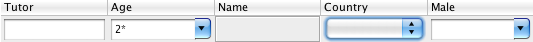

Download
TableFilter is open source, under MIT license. Its latest version, 5.2.2, has been released the 17th March 2016. The changelog is available below
- Sources:
- Available at BitBucket, as the project tablefilter-swing
- Alternatively, they can be downloaded directly as a single zip file:tablefilter-src-v5.2.2.zip
- The last Java 5 release was bundled on release 4.5.0: tablefilter-src-v4.5.0.zip
- Binaries:
- The binaries are included in the central maven repository. This means that, on a maven project, it can be used by adding the dependency to net.coderazzi.tablefilter-swing, or to net.coderazzi.tablefilter-swing-java5, if the version with support for Java 5 is needed.
- Outside a maven project, the binaries, (together with sources and javadoc) can be downloaded directly from the maven repository. The last versions are hosted at:
- All versions are available in source/binary form on this folder.
License
TableFilter is available under the MIT license.
Copyright (c) 2007-2015 Luis M. Pena - lu@coderazzi.net Permission is hereby granted, free of charge, to any person obtaining a copy of this software and associated documentation files (the "Software"), to deal in the Software without restriction, including without limitation the rights to use, copy, modify, merge, publish, distribute, sublicense, and/or sell copies of the Software, and to permit persons to whom the Software is furnished to do so, subject to the following conditions: The above copyright notice and this permission notice shall be included in all copies or substantial portions of the Software. THE SOFTWARE IS PROVIDED "AS IS", WITHOUT WARRANTY OF ANY KIND, EXPRESS OR IMPLIED, INCLUDING BUT NOT LIMITED TO THE WARRANTIES OF MERCHANTABILITY, FITNESS FOR A PARTICULAR PURPOSE AND NONINFRINGEMENT. IN NO EVENT SHALL THE AUTHORS OR COPYRIGHT HOLDERS BE LIABLE FOR ANY CLAIM, DAMAGES OR OTHER LIABILITY, WHETHER IN AN ACTION OF CONTRACT, TORT OR OTHERWISE, ARISING FROM, OUT OF OR IN CONNECTION WITH THE SOFTWARE OR THE USE OR OTHER DEALINGS IN THE SOFTWARE.
The source distribution contains, in addition to the library's source code, some tests. These tests make usage of a general icon library (FamFamFam), and, in case of the Java 1.5 version, of a open source class called TableSorter.java, which retains the original copyright.
As of version 1.2.0, there are also icons in the library, to facilitate its usage under Gui editors. These icons come from the FamFamFam silk icon library, licensed under a Creative Commons Attribution 2.5 License.
History
Version 5.2.2 ( 17th March 2016 )
Solved issue 42: If the filter, or the cell values contain backslashes, there are problems to match the filter and values.
The problem was initially found on columns containing windows Paths. The solution includes the added bonus to be able to remove most unneeded escaping (like backslashes being previously escaped, which was not required).
Version 5.2.1 ( 18th October 2015 )
Solved issue 41: Exception when a new model is assigned to a table already associated to a table filter.
Version 5.2.0 ( 12th September 2015 )
Initial support for right to left orientation support: Issue 40. This release only adjusts automatically the filter header to the orientation setup in the underlying table; without any additional configuration, the filter header changes its own configuration to adapt to the orientation specified for the table.
Solved issue 39: Wrong filter value when AutoChoices is enabled, which happened, in fact, when instant filtering was enabled.
Version 5.1.5 ( 5th August 2015 )
Solved issue 39: Wrong filter value when AutoChoices is enabled, which happened, in fact, when instant filtering was enabled.
Version 5.1.3 ( 5th May 2015 )
This release is purely to update documentation related to the move to Bitbucket; this release is functionally equivalent to version 5.1.2.
Version 5.1.2 ( 18th March 2015 )
Solved issue 37: when a developer adds a custom filter to the table filter header, an exception can be raised if not all the columns of the model are visible.
Solved issue 38: an exception raised in a very uncommon scenario, where a user would attach a table with configured table model to a table filter header, and before making visible the table, the table model would be changed.
Version 5.1.1 ( 29th June 2013 )
This is a very minor release, although it affects to the global API: it solves issue 33: not possible to turn off auto-selection at filter header level.
Version 5.0.0 ( 12th March 2013 )
Stopped the development of the release compatible with Java 5. Note that Java 5 entered its end-of-life on April 8, 2008 and is no longer supported as of November 3, 2009.
Solved issue 31: setComparator did not refresh PopUp. In previous releases, choices in the filter editors were displayed alphabetically sorted. With this release, choices are sorted with the registered comparator for the given class / editor.
Solved issue 32: allow different sorting on choices box. A new method is included on the IFilterEditor interface -setChoicesOperator- that the user can invoke to change the sort operator. In special, by invoking this method with a null operator, the user can return to the original behaviour -sort choices alphabetically-
Version 4.5.0 ( 17th November 2012 )
Extended TableFilterHeader constructors, to enable setting up directly the AutoChoices mode.
Solved issue 28: Cells with HTML <img> tags do not appear in filter choices. This issue is solved by creating a new ChoiceRenderer, the HtmlChoiceRenderer, that must be explicitly set on that column.
Provided additional documentation, to cover issue 29, on the method to remove a filter header.
Included new example on the distribution.
Version 4.4.1 ( 2nd September 2012 )
Solved issue 25, where the library would not use the background / foreground colors provided by CustomChoice instances.
Solved issue 26: if one CustomChoice' text representation was a substring (from the beginning) of other CustomChoice's representation, selecting the shorter CustomChoice would filter out all rows in the table.
Improved the performance of the library; an internal bug implied that any filter applied on the table would be evaluated up to 3 times.
Version 4.4.0 ( 23rd August 2012 )
Extended the IFilterEditor interface with two new methods to handle the history on each editor: getHistory / setHistory. These methods allow the user to add custom functionality to preserve the status of the headers across runs. In addition, the CustomChoice class implements now the Serializable interface, and all the CustomChoice implementations in the library can be now safely serialized.
Solved issue 24, which adds a check to avoid a rare exception occurrence.
Version 4.3.0 ( 17th January 2012 )
Solved issue 22, related to CustomChoices not working with wildcards. Its implementation has had impact on the CustomChoice interface, extended with several setters.
Solved minor bug related to parsing expressions. If the expression started with an operand (such as >), some inner spaces could be removed from the expression.
Solved issue 23; the table filter library would not handle properly tables with HTML content. The filter editor choices would be rendered incorrectly and the filtering would not work in many cases.
Version 4.2.0 ( 15th November 2011 )
Extended the IFilterEditor interface with two new methods to handle the user interaction with the editor; the added functionality, as requested -issue 19-, allows the programmer to disable the interaction with the editor without disabling the filter set.
Solved issue 16, related to missing custom choices on enumeration columns.
Solved issue 20, to properly filter content with embedded newlines.
Solved issue 21, a bug associated to instant filtering.
Version 4.1.4 ( 26th May 2011 )
Solved issue 15, where exceptions are raised when the user selects a choice in the filter editor's combobox if a Format class is associated to that editor.
Extended the CustomChoice class with several static methods to facilitate the creation of CustomChoice instances.
Version 4.1.3 ( 7th April 2011 )
Solved inconsistency on filter expressions containing spaces or tabs: spaces on any side of the filter expression are now dismissed; side spaces on the table contents are likewise dismissed. Note that this was already the behaviour on previous releases (before 4.1.x).
Solved issue 13 that would cause a null pointer exception when pasting a string with embedded new lines on a filter editor.
Bug solved: a choice selection -from the editor popup- caused no changes on the editor history -shown on the very same popup-.
Bug solved: the editor popup is displayed below its editor, but, if the editor position or size changed the popup would only change its position and size when reopened.
Solved issue 14 where the usage of AutoChoices.ENUMS was inconsistent or wrong.
Version 4.1.2 ( 23rd March 2011 )
Solved bug where enabled adaptive choices cause ArrayIndexOutOfBoundsException when table model is changed: see issue.
Solved bug on slow progress with instant filtering + adaptive choices, resulting in performance degradation: see issue.
Solved bug where wildcard expressions, if case insensitive, fail on Unicode characters: see issue.
Collators comparisons have been removed from the library: collators were never used on regular expressions or wildcard expressions, resulting in inconsistent behaviour.
Added document on library's performance.
Version 4.1.1 ( 15th March 2011 )
Solved bug: previous version would fail to set the content on a non editable filter editor if invoked before the editor' choices were made available.
Source reformatted.
Version 4.1.0 ( 14th March 2011 )
Instant filtering: filtering happens as the user inputs text; implemented after requirement.
Auto completion on editable filter editors: So far was only provided, and required, for non editable editors. Now, it can be setup (it is by default) on editable editors.
Warning feedback color: added special color to signal that the filters are hiding the table's rows. This functionality is not available on the Java 5 version.
Added method setFilterOnUpdates to trigger or not filter updates when the underlying table model changes. Not available on the Java5 version.
Possibility to define the height of a filter row (by delta over the default value), functionality implemented after requirement.
Solved bug where the model is added after attaching the filter header: see issue.
Solved bug where autochoices on booleans or enums would be incomplete
Solved bug on adaptive choices: updating the table would not correctly setup the choices of editors with filters
Version 4.0.0 ( 16th February 2011 )
The version 4.x presents, mostly, the same GUI as on version 3.1. However, there are many changes under the hood, and the library API presents many incompatibilities with respect to previous versions.
Although most changes relate to new functionality, the old API is also impacted. The most basic changes breaking compatibility are:
- The net.coderazzi.filters.gui.editor.FilterEditor class is not accessible anymore, replaced by the interface net.coderazzi.filters.gui.IFilterEditor.
- The AutoOptions mode, a boolean in version 3.x is now an enumeration, renamed as AutoChoices
- The class net.coderazzi.filters.UserFilter has been removed, with its functionality directly included in the net.coderazzi.filters.Filter implementation.
- setIgnoreCase cannot be invoked any longer on the FilterTextParser (which has been renamed as Parser), but on the associated model, represented by the interface net.coderazzi.filters.gui.IParserModel
In addition to the removal of some bugs, the changes on 4.x have focused on the choices shown to the user on each filter editor:
- Adaptive choices: the choices provided on each filter editor are modified automatically when the user applies changes on other filters in the same table. Only the choices that are not excluded by the other filters are shown to the user. Note that this behavior, enabled by default, can be disabled.
- Custom choices: it is possible to specify custom choices on any filter editor. A custom choice defines its own filter and its appearance.
- Auto choices: in version 3.x, when AutoOptions was enabled, the removal of elements in the table was not translated into the filter editor' choices. That is: choices no longer available in the table were not removed from the filter editor.
- Proper handling of null values in the table. A custom choice is now presented to the user to select all null or empty values.
The changes have also tried to make the whole API more consistent and homogeneous. For example, the previous class FilterTextParser and its interface have been replaced by the classes ParserModel and Parser, together with its own interfaces, and it is this ParserModel where most generic parsing structures must be set, including case ignoring, string formatters and comparators.
Version 3.1.2 ( 24th May 2010 )
- Solved bug: ignore case not properly handled in the options displayed in the list inside a filter. Additionally, the autocompletion would provide incorrect proposals on ignore case scenarios.
Version 3.1.1 ( 13th May 2010 )
- Solved bug: autoOptions / autoSelection not propagated properly from the FilterSettings.
- Updated example to use autoOptions by default.
Version 3.1.0 ( 10th May 2010 )
- There are no code changes from 3.0.1; this release was required due to the mavenization of the project. It is now available directly from the central maven repositories.
Version 3.0.1 ( 5th May 2010 )
- The filter's background and foreground colors can be defined directly in the FilterSettings class.
- The header's background color is not defined anymore as the table's header, but averaged with the table's background. In some platforms, the look is much nicer.
- The arrow to show the popup looks now the same if the filter is disabled or if the popup cannot be shown -because there is no entries to show-.
- The arrow to show the popup is now placed shifted to the bottom.
- Integrated Types's parser into the FilterSettings class.
- Solved error comparing dates.
- Solved error where the focus would remain on the editor, even if disabled.
- Whole build process has moved to ant
Version 3.0.0 ( 28th April 2010 )
- Version 3.0.0 is a major rewriting of the library. It is mostly focused to the Gui, but it affects to many internal aspects. In general, it should be much simpler using the library, for the programmer and for the user. The major changes are listed below.
-
Look and feel
Previous versions of TableFilter could look -depending on the platform and look and feel-, like: The inconsistencies would appear when the user mixed different types of editors on the same header. The most usual headers were implemented using combo boxes, which could be editable or not. As far as the platform would show both kind of editors in a similar way, the appearance was fine. In Windows XP, for example, both look almost the same, although the background is different; but on Os X, it would look as bad as:  Even if the user didn't mix editor types, the editable combo box looks here pretty bad (is the age and male columns in the figure).
The new version solves these inconsistencies by implementing its own editor component, looking as: Where there were before 4 types of editors -plus any custom creation by
the user-, there is now only one, covering the whole functionality provided
before by the 4 types:
Where there were before 4 types of editors -plus any custom creation by
the user-, there is now only one, covering the whole functionality provided
before by the 4 types:
- Each editor has its own history, which can be disabled.
- In addition to historic items, it is possible to specify options for each editor, or even obtaining these options automatically from the table's content.
- The editor's content can be edited, and autocompletion is built-in.
- An editor can be defined as non editable. In this case, the input can only match one of the existing options.
- The editor's content can use custom renderers, like in the following figure.
 There is no need anymore of casting editor types to use the functionality associated to
each type of editor. There is a disadvantage: users cannot define anymore their own editor
components.
There is no need anymore of casting editor types to use the functionality associated to
each type of editor. There is a disadvantage: users cannot define anymore their own editor
components.
-
Custom types
Previous versions required the usage of the interface net.coderazzi.filters.parser.ITypeBuilder to handle non primitive types, including Dates. Its only method, parse, would produce an Object from a String, very much as the standard java.text.Format class does. While writing the new version, I uncovered some errors on the initial implementation, realizing that the filtering requires, not only parsing provided text, but also to format objects into Strings.
What this means is that the net.coderazzi.filters.parser.ITypeBuilder type is now gone, replaced by usage of java.text.Format instances. -
Filter parser
The original version of TableFilter allowed the definition of complex expressions. For example, for a table having a column called age and other called name, the user could enter an expression such as:age > 25 & age < 30 & name ~ Fred*
This is very convenient, even if it could be misleading: the previous expression could be entered on any column, not just on the age or name columns. But the main problem is that the parser was not very configurable, defined quite exotic operators, and included some obvious errors -using of spaces, for example, would normally lead to problems-.
In version 3.0, the distributed parser only allows basic filtering expressions, without variable names. The original parser could still work -the interface is mostly the same-, but I have preferred to discontinue it. If it were still needed, I will favor implementing a correct parser instead.
And, of course, the user can still use its own parser, as the interface has only slightly changed.
Version 2.2.0 ( 12th April 2010 )
- This version reintroduces compatibility with Java 5, temporarily excluded on version 2.1, although not all features are available in the old Java version; more specifically, autoselection will not be supported under Java 5. In addition, many tests for the Java 5 version have been rewritten, as they contained important bugs
- Concerning Java 6, this release solves a minor bug, as not all resources would be released when a new table model was applied to a table filter.
Version 2.1.2 ( 26th January 2010 )
- Added a new singleton instance to facilitate updating the default settings of the library (what can be achieved, anyway, using system properties).
- Added an autoselection mode, enabled by default. If the current filtering filters out all rows in the table but one, that row become automatically selected. Likewise, selected rows are automatically de-selected when they are filtered out (this is the usual operation mode in the Java 6 table sorter)
- Modified the default behaviour of the filters, to use wildcard expressions when the user does not specify any operator.
- All the filter editor constructors where the filter position (table's column) was specified, are now deprecated.
- Solved bugs related to setting the header visible or hidden, and enabled or disabled
- Added new Position type NONE, to ensure that the header is not automatically placed -if that is so required-.
Version 2.0.1 ( 13th November 2009 )
-
This version is limited to defining properly the properties that
define the default behaviour. Although already partially included in
version 2.0.0, the inclusion was not complete and buggy in the case of
some of these properties.
The full list of system properties that can be defined to override the default TableFilter behavior is listed here. - A new example is provided to test the extended behaviour.
Version 2.0.0 ( 1st September 2009 )
-
This version extends some public interfaces, adding functionality. However,
it means that users that implemented their own table filter editors or text parsers
must now implement
the new interfaces, so the compatibility is broken. Most users uniquely use the existing
table filter editors and parsers, and will not face any compatibiliy issues:
-
Changed interface on
ITableFilterEditor
- It is possible to retrieve the applied filter on any table's column
- It is also possible to set dynamically the filter on any column
- Its is supported, through the use of the new ITableFilterEditorObserver interface, to be notified of changes on the filter's editor.
-
Changed interface on IFilterTextParser,
including two methods already defined in the generic implementation in FilterTextParser:
- Define a type builder for specific user types.
- Define a comparator for any type.
- Added interface on ITableFilterHeaderObserver, to observe events on the TableFilterHeader.
- Dates are now automatically handled in the library.
- The user can provide properties that override some default behaviours. These properties have been later redefined in 2.0.1.
- Bug solved: usage of renderers on TableChoiceFilterEditor would likely drive to AWT exceptions.
- Bug solved: changing the table or the model, using the TableChoiceFilterEditor on a column with boolean or enumeration types, would hide all the elements, as if they would not validate the filter -even if empty-
- UserFilters are automatically enabled
- Extended examples to show how to listen for events on the table editors
-
Changed interface on
ITableFilterEditor
Version 1.5.0 ( 7th August 2009 )
- Changes; this release improves on the usage of the TableChoiceFilterEditor,
that is, the editor filter that offers the user a list of the different options
as found in the table model:
- The choices are automatically updated when new entries are included in the table. That is, new values are added to the filter's choices; however, old values, that are removed or replaced out of the table model, are not removed from the filter's choices.
- In addition, the comparator function used to set the order among the choices in the editor, is replaced, to use automatically the comparison method supplied on Comparable classes (if supplied, that is)
Version 1.4.1 ( 4th July 2009 )
- Changes:
- Bug solution: in specific conditions, the header would fail to display.
- Bug solution: filters could be added to the default TableFilterHeader, but it would be needed to invoke reportFilterUpdatedToObservers(), a protected method: therefore, clients had to be defined as separate classes. Adding now a user filter triggers automatically the report method.
- Added commodity class UserFilter to create external filters.
- Added serialization ids to all serializable classes.
Version 1.4.0 ( 10th June 2009 )
- Changes:
- The whole namespace is migrated from byteslooser.com to coderazzi.net
- Removing Java compilations warnings from source.
Version 1.3.0 ( 17th February 2009 )
- Changes:
- Automatic layout management for the filter header.
On previous versions, the user had to place manually the header in the Gui container,
while now is is enough to instantiate the header and set the associated table:
TableFilterHeader filterHeader = new TableFilterHeader(table);
- Version 1.3.0 keeps backwards compatibility: if the TableFilterHeader is explicitely included in some Gui container, the default behaviour to automatically setup the filter header close by the table header is deactivated.
- Automatic layout management for the filter header.
On previous versions, the user had to place manually the header in the Gui container,
while now is is enough to instantiate the header and set the associated table:
Support, issues, forums
Issues, or bugs, can be reported at the BitBucket host site.
Discussions can be carried at the associated Google group forum.
Would you require commercial support on this library, or specific customizations, please contact lu@coderazzi.net